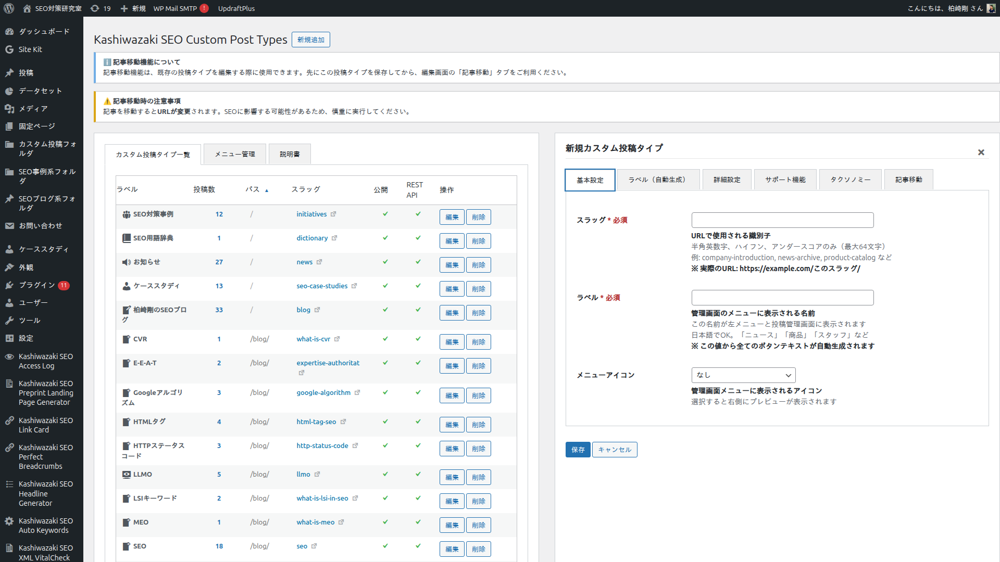
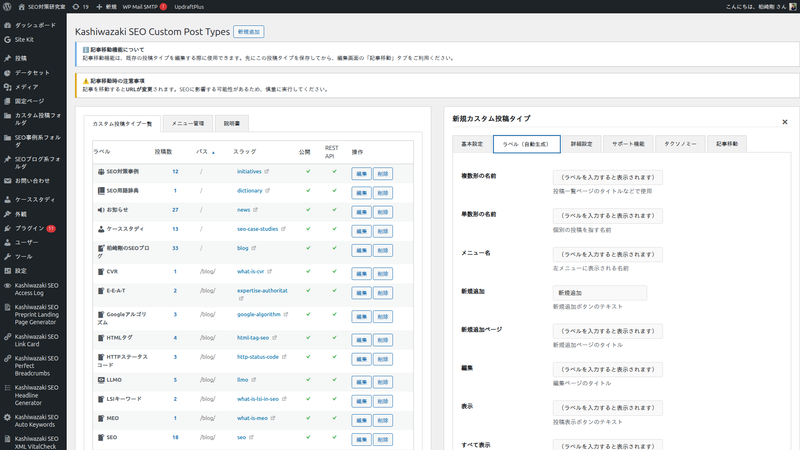
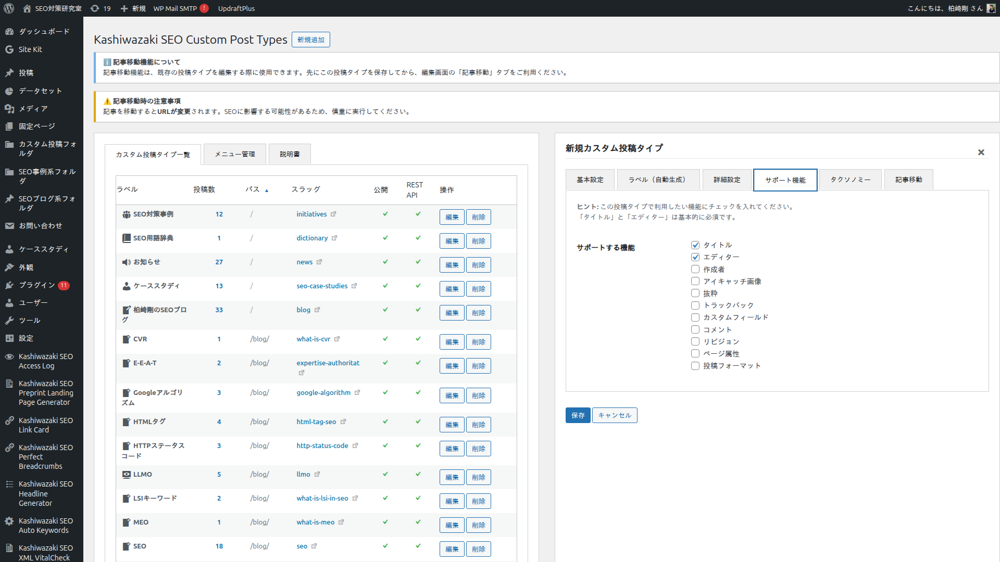
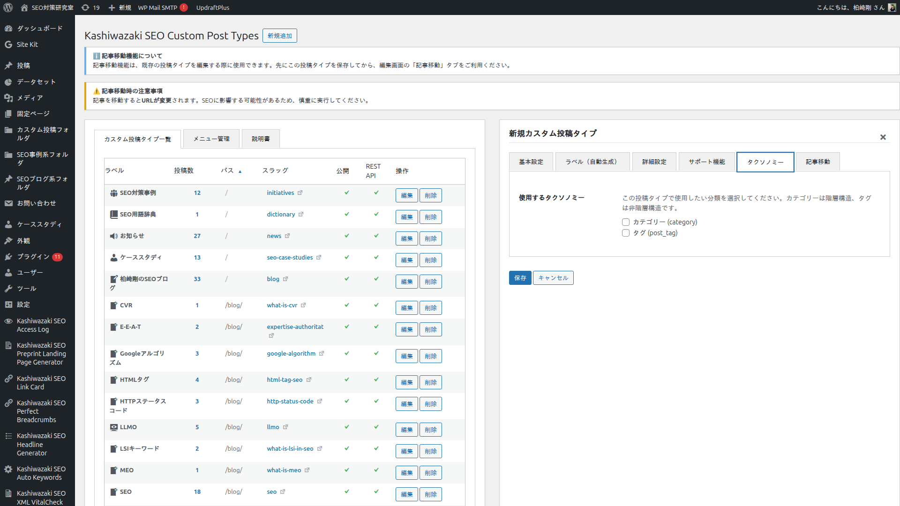
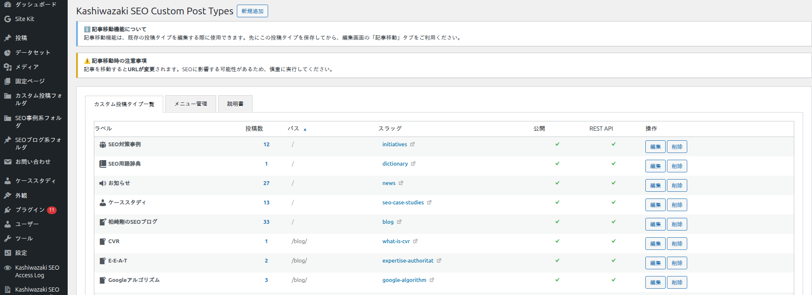

投稿タイプ管理
カスタム投稿タイプを GUI から作成・編集・削除するためのフォームは 6 つのタブに分かれています。このページでは各タブのすべての入力項目について、動作・UI・デフォルト値・実装・SEO/GEO 観点での使い方を網羅的に解説します。
作成フォームの開き方
管理画面の 「カスタム投稿タイプ一覧」 タブで 「+ 新規追加」 ボタンをクリックすると、投稿タイプ作成フォームが開きます。既存の投稿タイプを編集する場合は、一覧の各行にある 「編集」 リンクをクリックします。

フォームタブの構成
① 基本設定
スラッグ、ラベル、メニューアイコンの必須 3 項目
② ラベル（自動生成）
基本ラベルから自動生成された 10 項目のプレビュー
③ 詳細設定
公開設定、表示制御、階層、親ディレクトリ、アーカイブ
④ サポート機能
タイトル・エディター等 WordPress 標準機能の選択
⑤ タクソノミー
カテゴリー・タグ・独自タクソノミーの関連付け
⑥ 記事移動
既存投稿を別タイプに一括マイグレーション（編集時のみ）
① 基本設定タブ
カスタム投稿タイプの根幹となる 3 項目（スラッグ、ラベル、メニューアイコン）を設定します。スラッグとラベルは必須、メニューアイコンは任意です。

スラッグ（公開 URL）
| 項目 | 内容 |
|---|---|
| 必須 | はい |
| UI 上の名前 | スラッグ |
| 内部 DB カラム | url_slug (varchar 64) |
| 入力可能文字 | 半角英数字、ハイフン（-）、アンダースコア（_） |
| 最大長 | 64 文字 |
| デフォルト値 | なし（必ず入力が必要） |
| 警告表示 | 20 文字を超えると黄色の警告メッセージが表示される。ただしこれは互換性の注意喚起であり、本プラグインは 64 文字まで正常動作する |
| 内部システム名の生成 | 入力した URL スラッグから、自動的に内部スラッグ（最大 20 文字、システム識別子）が生成される。ユーザーが直接入力する必要はない |
このスラッグは実際に URL に使われる文字列です。例えば seo-latest-news-archive と入力すると、URL は https://example.com/seo-latest-news-archive/ の形式になります（親ディレクトリ未設定の場合）。
SEO キーワードを URL に含めるヒント
検索エンジンは URL 内のキーワードもサイト理解の手がかりにします。短い内部 ID（news など）ではなく、具体的なキーワード（seo-latest-news-and-trends-2026 など）を入れると、検索結果でのクリック率（CTR）向上に役立ちます。
ラベル
| 項目 | 内容 |
|---|---|
| 必須 | はい |
| UI 上の名前 | ラベル |
| 内部 DB カラム | label (varchar 100) |
| 入力可能文字 | 日本語を含むすべての文字列 |
| デフォルト値 | なし（必ず入力が必要） |
| 用途 | WordPress 管理画面のサイドメニュー、投稿一覧ページの見出し、管理バーなど、あらゆる表示場所のベース名になる |
| 自動生成されるラベル | この 1 項目から、25 種類以上の派生ラベルが自動的に生成される（次のタブで詳細確認） |
例: ラベルに「ニュース」と入力すると、「新規ニュース追加」「すべてのニュース」「ニュースを検索」などが自動的に生成されます。
メニューアイコン
| 項目 | 内容 |
|---|---|
| 必須 | いいえ |
| UI 上の名前 | メニューアイコン |
| 内部 DB カラム | menu_icon (varchar 100) |
| 入力方式 | WordPress 標準 Dashicons のドロップダウン選択（プレビュー付き） |
| デフォルト値 | 未選択の場合は dashicons-admin-post（投稿と同じアイコン）が使用される |
| プレビュー | 選択すると右側に実際のアイコンが表示される |
② ラベル（自動生成）タブ
基本設定タブで入力した「ラベル」から自動生成された各ラベルがリアルタイムプレビュー形式で表示されます。このタブは読み取り専用のプレビューです。通常は編集する必要はありません。

プレビュー項目（10 項目）
UI にプレビュー表示される主な項目は以下の 10 種類です。実際にはバックエンドでさらに多くのラベル（計 25 種以上）が自動生成され、register_post_type() の labels 引数に渡されます。
| UI 表示名 | WordPress 内部キー | ラベル=「ニュース」の場合の自動生成例 |
|---|---|---|
| 複数形の名前 | name | ニュース |
| 単数形の名前 | singular_name | ニュース |
| メニュー名 | menu_name | ニュース（親メニューありの場合は「└ ニュース」） |
| 新規追加 | add_new | 新規追加 |
| 新規追加ページ | add_new_item | 新規ニュースを追加 |
| 編集 | edit_item | ニュースを編集 |
| 表示 | view_item | ニュースを表示 |
| すべて表示 | all_items | すべてのニュース |
| 検索 | search_items | ニュースを検索 |
| 見つかりません | not_found | ニュースが見つかりません |
UI に表示されないが自動生成されるラベル
以下のラベルは UI のプレビューには表示されませんが、バックエンドで自動生成され register_post_type() に渡されます。
| WordPress 内部キー | 自動生成例（ラベル=「ニュース」の場合） |
|---|---|
name_admin_bar | ニュース（管理バーで使用） |
new_item | 新規ニュース |
view_items | ニュースを表示 |
parent_item_colon | 親ニュース: |
not_found_in_trash | ゴミ箱にニュースが見つかりません |
featured_image | アイキャッチ画像 |
set_featured_image | アイキャッチ画像を設定 |
remove_featured_image | アイキャッチ画像を削除 |
use_featured_image | アイキャッチ画像として使用 |
archives | ニュースアーカイブ |
insert_into_item | ニュースに挿入 |
uploaded_to_this_item | このニュースにアップロード |
filter_items_list | ニュースリストをフィルター |
items_list_navigation | ニュースリストナビゲーション |
items_list | ニュースリスト |
item_published | ニュースを公開しました。 |
item_published_privately | ニュースを非公開で公開しました。 |
item_reverted_to_draft | ニュースを下書きに戻しました。 |
item_scheduled | ニュースを予約投稿しました。 |
item_updated | ニュースを更新しました。 |
item_link | ニュースリンク |
item_link_description | ニュースへのリンク。 |
補足
v1.0.25 の管理フォームではラベルの個別上書き UI は提供していません。自動生成されたラベルをそのまま使う運用を前提としています。プラグインのコード上は labels を JSON として DB に保存しており、将来的な個別編集機能の拡張余地は残されています。
③ 詳細設定タブ
投稿タイプの公開設定、階層構造、URL 設計、アーカイブ動作など、SEO/GEO 的に最も重要な項目が集約されたタブです。6 つのセクションに分かれています。

公開設定（public）
| 項目 | 内容 |
|---|---|
| UI 表示 | 「公開」チェックボックス 1 個 |
| DB カラム | public (tinyint(1)) |
| デフォルト | ON（チェック済み） |
| OFF にしたときの動作 | フロントエンドから URL アクセスできなくなる。管理画面のみで使用する非公開 CPT になる。検索結果にも表示されない |
| v1.0.25 修正 | 以前はこの設定が無視されていたが、v1.0.25 で DB 値が正しく register_post_type() に反映されるようになった（HIGH-1 修正） |
表示設定（show_ui / show_in_menu / publicly_queryable / query_var）
4 つのチェックボックスでより細かい表示動作を制御します。すべてデフォルトは ON です。
| 項目 | 説明 |
|---|---|
管理画面に表示（show_ui） | 投稿の追加・編集画面を表示するか。OFF にすると管理画面から編集できなくなるが、投稿データ自体は残る |
メニューに表示（show_in_menu） | 管理画面の左サイドメニューに項目を表示するか。OFF にするとメニューから非表示になるが、URL を直接叩けば編集画面に入れる |
パブリッククエリ可能（publicly_queryable） | フロントエンドで URL アクセスを許可するか。OFF にすると /{url_slug}/ へのアクセスは 404 になる |
クエリ変数を使用（query_var） | ?post_type=xxx 形式のクエリ変数で投稿を取得可能にするか。OFF にすると WordPress 標準のクエリ URL は使えなくなるが、本プラグインの階層 URL は post_type / name 標準変数で動作するため影響しない（v1.0.25 修正済） |
階層（hierarchical）
| 項目 | 内容 |
|---|---|
| UI 表示 | 「階層化（親子関係を有効化）」チェックボックス 1 個 |
| DB カラム | hierarchical (tinyint(1)) |
| デフォルト | OFF |
| ON にすると有効になる機能 |
|
常に有効な機能（hierarchical の ON/OFF に関係なし） |
|
短縮 URL（allow_shortlink）
| 項目 | 内容 |
|---|---|
| UI 表示 | 「短縮 URL 形式（?p=ID）を許可」チェックボックス 1 個 |
| DB カラム | allow_shortlink (tinyint(1)) |
| デフォルト | OFF |
| ON の動作 | ?post_type=xxx&p=ID 形式のクエリ URL でのアクセスを許可する |
| OFF の動作 | 同クエリ URL でアクセスすると、正規のパーマリンク URL（例: /blog/post-slug/）へ 301 リダイレクトされる |
| SEO 推奨 | SEO の観点では OFF 推奨（重複 URL を排除できる） |
スラッグトップページ（archive_display_type）
アーカイブ URL（/{url_slug}/）にアクセスされたときの動作を 4 つのラジオボタンから選択します。
| ラジオオプション | 内部値 | 動作 |
|---|---|---|
| 指定なし（デフォルト） | default | has_archive=OFF のとき、同名スラッグの固定ページ・通常投稿・他カスタム投稿があればそれを表示する（フォールスルー）。該当する投稿が無ければ 404。「同名ページに素通しさせたい」用途で使う |
| 表示しない | none | 強制的に 404 を返す。同名スラッグの固定ページが存在してもフォールスルーしない。「このスラッグへのアクセスを完全に拒否したい」用途で使う |
| アーカイブ一覧を表示 | post_list | 強制的に投稿一覧のアーカイブテンプレートを表示。「子階層の投稿タイプの記事も含める」という追加チェックボックスがこのモードで表示される |
| 固定ページを表示 | custom_page | 指定した固定ページをアーカイブ URL で表示。ハブページ戦略に最適。固定ページ選択ドロップダウンがこのモードで表示される |
子階層の投稿タイプの記事も含める（archive_include_children）
「アーカイブ一覧を表示」モード選択時のみ表示されるサブオプションです。ON にすると、この投稿タイプを親ディレクトリに設定している他のカスタム投稿タイプの記事も、このアーカイブ一覧に含めて表示します。孫階層も再帰的に含まれます。
ハブページ戦略
「固定ページを表示」モードでは、アーカイブ URL に解説ページやランディングページを割り当てつつ、配下のサブトピック記事は階層 URL で展開できます。これはテーマの情報網羅性を構築するための有力な手段です。詳細は階層 URL 設計ページを参照してください。
親ディレクトリ（parent_directory）
| 項目 | 内容 |
|---|---|
| UI 表示 | ドロップダウン選択（固定ページ / カスタム投稿タイプの 2 グループ） |
| DB カラム | parent_directory (varchar 100) |
| デフォルト | 「— 親ディレクトリなし —」（未選択） |
| 選択肢 |
固定ページグループ: サイト上のすべての固定ページがパス付きで表示される（例:「SEO (/seo/)」） カスタム投稿タイプグループ: 他のカスタム投稿タイプが表示される |
| 結果の URL 構造 | 選択した親の下にこのカスタム投稿タイプの URL が配置される（例: 「会社情報 (/company/)」選択 → /company/{url_slug}/{post_slug}/） |
親ディレクトリは多段階層を再帰的に解決します。親ページが更に親ページを持つ場合、build_full_path() が完全パスを構築します。詳細は階層 URL 設計ページを参照してください。
④ サポート機能タブ
この投稿タイプで使用する WordPress 標準機能を選択します。各機能はチェックボックス形式で、デフォルトでは「タイトル」と「エディター」のみが選択されています。

| 機能 | 説明 |
|---|---|
タイトル（title） | 投稿タイトル入力欄。通常は ON 推奨。デフォルト ON |
エディター（editor） | 本文エディター（クラシック/ブロック）。通常は ON 推奨。デフォルト ON |
アイキャッチ画像（thumbnail） | アイキャッチ画像のサポート。テーマ側で add_theme_support('post-thumbnails') が必要 |
抜粋（excerpt） | 手動入力の抜粋。一覧表示で要約を表示したい場合に有効化 |
投稿者（author） | 投稿者選択欄。複数投稿者を区別したい場合に有効化 |
コメント（comments） | コメント機能 |
トラックバック（trackbacks） | トラックバック機能 |
カスタムフィールド（custom-fields） | カスタムフィールド入力 UI。ACF などのプラグインを使う場合は不要なことが多い |
ページ属性（page-attributes） | ページ属性（親ページ・順序）。「階層化」を ON にすると自動追加される |
投稿フォーマット（post-formats） | 投稿フォーマット（ギャラリー、画像、動画など）。テーマ側の対応が必要 |
リビジョン（revisions） | リビジョン機能（編集履歴） |
補足
サポート機能の選択は DB の supports カラムに JSON 配列として保存されます。保存後は register_post_type() の supports 引数に配列として渡され、WordPress の投稿編集画面のメタボックス表示を制御します。
⑤ タクソノミータブ
この投稿タイプに関連付けるタクソノミー（分類）を選択します。WordPress 標準の category（カテゴリー）と post_tag（タグ）に加え、他のプラグインで定義された公開タクソノミーも一覧に表示されます。

表示される選択肢
| 項目 | 内容 |
|---|---|
カテゴリー（category） | WordPress 標準の階層タクソノミー。親子関係あり。親カテゴリーを持てる |
タグ（post_tag） | WordPress 標準の非階層タクソノミー。フラット。親子関係なし |
| その他の公開タクソノミー | 他プラグインが register_taxonomy() で定義した public=true のタクソノミー |
| 除外される内部タクソノミー | post_format（投稿フォーマット）、nav_menu（ナビメニュー）、link_category（リンクカテゴリー）は選択肢から除外される |
保存の仕組み
チェックしたタクソノミーは DB の taxonomies カラムに JSON 配列として保存され、投稿タイプ登録時に register_taxonomy_for_object_type() を通じて関連付けられます。この関連付けにより、投稿編集画面にチェックしたタクソノミーのメタボックスが表示されるようになります。
注意: タクソノミーの作成機能は提供していない
本プラグインは「既存のタクソノミーを投稿タイプに関連付ける」機能のみ提供します。新しいタクソノミーを作成するには、別途タクソノミー管理プラグイン（Custom Post Type UI など）の併用を検討してください。
⑥ 記事移動タブ
既存の投稿タイプを編集モードで開いたときにのみ機能する、投稿タイプ間の記事マイグレーションツールです。スラッグやタクソノミーの関連付けを維持したまま、投稿を別の投稿タイプに一括移動できます。
新規作成モードでは利用できません
新規作成時に「記事移動」タブを開くと、「既存の投稿タイプを編集する際に使用してください」という案内が表示されます。先に投稿タイプを保存してから、再度編集モードで開いてください。
操作手順
移動元の投稿タイプを選択 - 画面上部のドロップダウンから、記事を移動元となる投稿タイプを選択します。「すべて」を選べば複数の投稿タイプから横断的に選択できます。選択可能な投稿タイプは WordPress 標準の post（投稿）、page（固定ページ）および全てのカスタム投稿タイプです。
移動元のカテゴリー/タクソノミーでフィルタ - 投稿タイプを選択すると、そのタイプに関連付けられているタクソノミー（カテゴリー、タグ等）が自動的に読み込まれます。特定のカテゴリーに属する記事だけを移動したい場合、ここで絞り込めます。
記事一覧を読み込む - 「記事を読み込む」ボタンをクリックすると、AJAX で記事一覧が取得・表示されます。タイトル、投稿タイプ（「すべて」選択時）、ステータス、日付、作成者の 5 列が表示されます。
移動する記事を選択 - 各行のチェックボックスで移動する記事を個別に選択します。「すべて選択」「すべて解除」ボタンで一括操作も可能です。
移動を実行 - 「〇〇へ選択した記事を移動」ボタン（移動先は編集中の投稿タイプ自身）をクリックすると、AJAX で非同期に記事の post_type が変更され、完了状態が表示されます。
移動時に保持される情報と変化する情報
| 項目 | 動作 |
|---|---|
| タイトル（post_title） | 変化なし |
| 本文（post_content） | 変化なし |
| スラッグ（post_name） | 変化なし（同一スラッグをそのまま使用） |
| 投稿ステータス | 変化なし（公開/下書き/予約投稿/非公開など） |
| 投稿日時 | 変化なし |
| 投稿者 | 変化なし |
| メタデータ（post_meta） | 変化なし |
| タクソノミー関連付け | 移動先の投稿タイプで同じタクソノミーが有効な場合は維持される。無効な場合は関連が切れる |
| 投稿タイプ（post_type） | 変更される（移動先のタイプに書き換わる） |
| URL | 変更される（移動先の URL 構造に従う。親ディレクトリや url_slug が異なれば URL が変わる） |
URL が変わることへの注意
記事移動を実行すると、投稿の URL は移動先の投稿タイプの URL 構造に従って変わります。外部からのリンクや旧 URL でのアクセスは 404 になります。SEO への影響を最小化するためには、以下のいずれかの対策を検討してください：
（1）本プラグインの旧スラッグ追跡機能が該当するケース（同じ投稿タイプ内でのスラッグ変更）であれば 301 リダイレクトが自動成立しますが、投稿タイプそのものが変わる場合は該当しません。
（2）リダイレクト系プラグイン（Redirection など）で旧 URL → 新 URL のマッピングを手動追加してください。
（3）影響範囲が限定的なら、事前にリスクを把握した上で実行してください。
保存・キャンセル
フォーム下部の 「保存」 ボタンをクリックすると、AJAX で wp_ajax_kstb_save_post_type エンドポイントに送信されます。保存成功後は以下が実行されます:
- DB の
wp_kstb_post_typesに新規挿入 or 更新 - 内部キャッシュ
clear_cache()を実行 force_reregister_post_type()で WordPress に即時再登録flush_rewrite_rules()を 1 回実行してリライトルールを再生成（v1.0.25 で重複 flush 解消済）- 成功メッセージ表示
キャンセル（「キャンセル」 ボタン、または右上の「×」ボタン）をクリックすると、変更を破棄してフォームを閉じます。
カスタム投稿タイプ一覧の操作

一覧画面の各行には以下の列があります。
| 列 | 内容 |
|---|---|
| ラベル | 日本語ラベル |
| 投稿数 | 公開記事の件数（クリックで投稿一覧に遷移） |
| パス | 完全パス（親ディレクトリを含む） |
| スラッグ | URL スラッグ（アーカイブ URL 付き） |
| 公開 | public 設定の ON/OFF アイコン |
| REST API | show_in_rest 設定の ON/OFF アイコン |
| 操作 | 編集・削除・再登録ボタン |
各操作ボタンの動作
| ボタン | AJAX エンドポイント | 動作 |
|---|---|---|
| 編集 | - | フォームを編集モードで開く。内部名 (slug) には直接の入力欄がないが、公開 URL スラッグ (url_slug) を変更すると hidden の内部名も自動再生成されて保存時に DB の slug カラムも更新されるため、「内部名を保持したい場合は url_slug を変更しない」点に注意。詳細は トラブルシューティングの FAQ 参照 |
| 削除 | wp_ajax_kstb_delete_post_type | 投稿タイプの定義を削除。投稿データ自体は DB に残る。v1.0.25 からは削除時に unregister_post_type() を呼んでから flush_rewrite_rules() するため、通常のパーマリンクルートのゴーストは残らない（ただし独自 add_rewrite_rule() 由来のカスタムルールは現行バージョンでは残り得る、v1.1.0 で対応予定） |
| 再登録 | wp_ajax_kstb_reregister_post_type | WordPress への登録を強制的に再実行。設定変更後に URL やメニューが反映されない場合に使用 |
削除時の注意
投稿タイプを削除しても、その投稿タイプに属する投稿データは wp_posts テーブルに残ります。同じスラッグで投稿タイプを再作成すれば、投稿データは再び表示されます。完全に削除したい場合は、削除前に「記事移動」機能で別の投稿タイプに記事を移動するか、WordPress の管理画面から個別に投稿を削除してください。
強制再登録（自動修復）
プラグインの読み込み順序や他プラグインとの相互作用により、稀にカスタム投稿タイプが正常に登録されないことがあります。本プラグインは初期化時に登録状態を自動チェックし、未登録の投稿タイプを検出すると KSTB_Post_Type_Force_Register::force_register_all() によって強制的に再登録します（自動修復）。
手動で強制再登録するには、以下の方法があります:
- 投稿タイプ一覧の各行にある 「再登録」 ボタンをクリック
- 設定 > パーマリンク設定 で「変更を保存」をクリック（リライトルールのフラッシュが発生）
WordPress 予約語との衝突回避
WordPress には media、link、theme、plugin などの予約語があり、これらを投稿タイプの内部スラッグに使うと標準機能と衝突して動作不良の原因になります。本プラグインは内部スラッグに予約語が指定された場合、自動的にプレフィックス変換などの回避処理を行い衝突を防ぎます。
主な予約語: media, link, links, theme, themes, plugin, plugins, user, users, option, options, comment, comments, admin, site, sites, network, dashboard, upload, edit, profile, tools, import, export, settings, update, menu, term, widget, widgets。
REST API 対応
本プラグインで作成したカスタム投稿タイプは、デフォルトで REST API（/wp-json/wp/v2/{slug}）に対応します。これにより以下が可能になります:
- ブロックエディタ（Gutenberg）の自動動作
- 外部システムからの投稿取得・作成（API 経由）
- フロントエンド SPA フレームワーク（React/Vue 等）との連携
REST API 対応の可否は DB カラム show_in_rest の値に従います。現行バージョン（v1.0.25）の管理フォームは作成時に ON 固定ですが、必要に応じて直接 DB 値を編集することで切り替えできます。